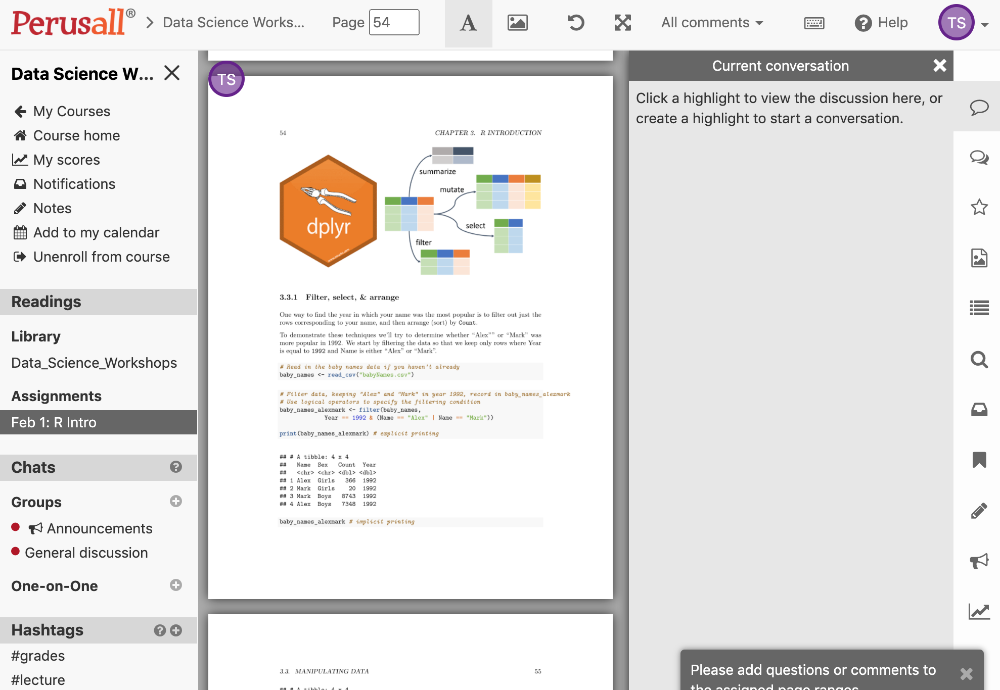

How to use Perusall?
You should have received an email asking you to create an account at https://perusall.com/. You should also have receive a course code via email. If you have not, please contact your workshop administrator. Once your Perusall account is created, enter the course code and you will be able to view the course materials.
During the two week self-study period, you can highlight sections of the workshop materials you wish to ask questions about, add comments, as well as respond to questions and comments from other participants. The window for submitting questions will close 24 hours prior to the Zoom Q&A session.
My courses
Once you have logged into Perusall and entered your course code, you should see the name of the workshop you have registered for listed under My courses (highlighted in red in the image below).

Click on the name of the workshop to proceed.
Get started
You will now enter the Course home page, under the Get started tab. This page provides some basic information about Perusall. At the top of the page, there are two other tabs — Library and Assignments. Click on the latter (highlighted in red in the image below).

Assignments
You will now enter the Assignments page. For your workshop, there will be only one assigment. To start working on the assignment, click on the Work on assignment button (highlighted in red in the image below).

You will enter a new page and be presented with a popup window of instructions. Once you’ve read the instructions, click End tour in the bottom right of the popup (highlighted in red in the image below).

Layout
You will now enter a new page where the main screen displays the workshop materials as a pdf file. You can scroll through the materials as you work on them. You’re now ready to start! You can work through the materials at your own pace.

Ask a question
As you work through the materials, you may want to ask questions or make comments about the content. You can do this by simply highlighting the part of the text that you’d like to refer to (see highlighted code chunk in left side panel below). When you highlight text, a new panel opens on the right called Current conversationthat contains a smaller ‘speech bubble’ inside which you can type text — this is where you can ask your question or make a comment (highlighted in red in right side panel below). Your question could be in plain English, or include code.

Once you have finished typing your question press enter/return. Your question will now be visible to the instructor and other workshop participants. Don’t be shy — there are no silly questions!!!
As you scroll through the materials, you can click on any existing highlighted text to view the conversation associated with it.
Answer a question
If you see a comment or question that you can help with, please try to answer it yourself! There will be a speech bubble under the most recent part of the conversation thread, which you can write your reply in (highlighted in red in the image below). This is a great way to learn, since we often learn best by teaching others. Feel free to ask as many additional questions as your want within the same conversation thread.

The above process repeats itself whenever you reach part of the materials you have a question about: highlight text -> type question.